特定位置に注釈の線を付けた複数折れ線グラフ
Multi-Line-Annotation
サマリー
このチュートルアルは、指定した位置に注釈の線を付けた複数折れ線グラフを作成する方法を示します。
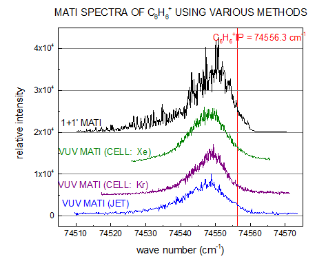
必要なOriginのバージョン: Origin 2015 SR0以降
ステップ
- ヘルプ: ラーニングセンター メニューを選択、または キーボードのF11 キーを押して、ラーニングセンターを開きます。グラフサンプルタブを選択し、カテゴリーのドロップダウンリストから線＋シンボルグラフを選択します。下にあるグラフサンプルから「Line
and Symbol Graphs - Multi-line-plot with Special Position Annotation
Line」のサンプルをダブルクリックして開きます。
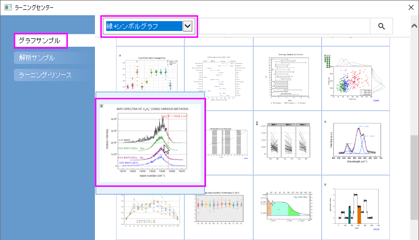
Note:このチュートリアルは、チュートリアルデータプロジェクト<Origin EXE フォルダ>\Samples\TutorialData.opjuのMulti-line-plot
with Special Position Annotation Line フォルダと関連しています。
- Multi-line-plot with Special Position Annotation Lineワークブックのワークシートを開きます。複数の折れ線グラフを作図するために、ワークシート内の全ての列を選択し、2Dグラフギャラリーツールバーの折れ線ボタン
 を選択します。グラフから凡例を削除します。
を選択します。グラフから凡例を削除します。
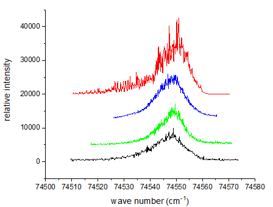
- Y 軸をクリックして、ミニツールバーで目盛のスタイルボタンをクリックし、リストから内側を選択します。
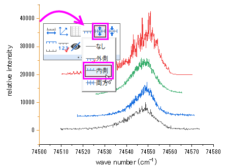
X 軸をクリックして、目盛のスタイルを同様に設定します。
- Y 軸を再度クリックして、ミニツールバーで軸スケールボタン
 をクリックし、開いた軸スケールボタンで以下のように設定します。
をクリックし、開いた軸スケールボタンで以下のように設定します。
X軸（水平方向）：開始74505,終了74575
Y 軸（垂直方向）：開始-2500,終了45000
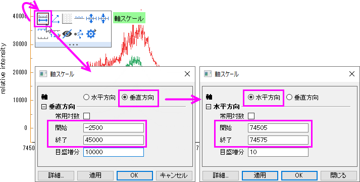
- Y 軸を再度クリックして、ミニツールバーでグリッド線を表示ボタンをクリックし、リストから主を選択して主グリッド線のみを表示します。
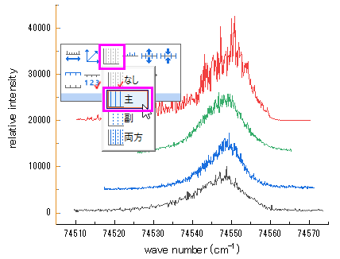
- レイヤ内の何もない領域でクリックしてミニツールバーを開き、レイヤ枠ボタンをクリックして枠線を表示します。
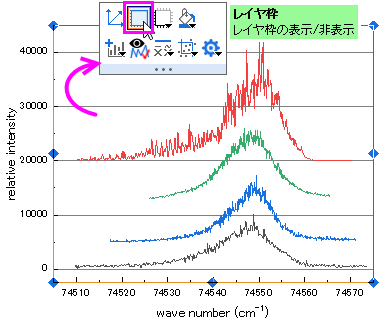
- グラフ内のプロットを1つクリックし、ミニツールバーを表示させます。線の色ボタン
 をクリックし、カラーチューザーを開きます。グループタブでプロット毎のサブタブを選択し、Ctrlキーを押しながら現在のカラーリストをクリックして推移リストエディタダイアログを開き、最初の4つのプロット用の色を変えます。
をクリックし、カラーチューザーを開きます。グループタブでプロット毎のサブタブを選択し、Ctrlキーを押しながら現在のカラーリストをクリックして推移リストエディタダイアログを開き、最初の4つのプロット用の色を変えます。
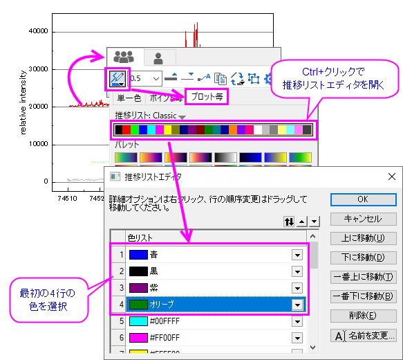
- Y軸の目盛ラベルをダブルクリックして、軸ダイアログボックスを開きます。目盛ラベルタブに移動して、左軸の表示を科学的：10^3に変更します。OK
ボタンをクリックします。
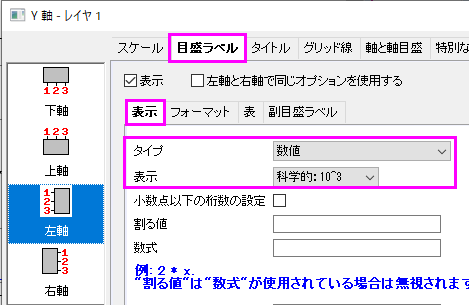
- 次に、グラフに垂直の線を追加します。メインメニューから挿入：直線を追加を選択してダイアログを開きます。ダイアログでX位置を指定し、線の色を赤にします。OKを押して設定を適用します。
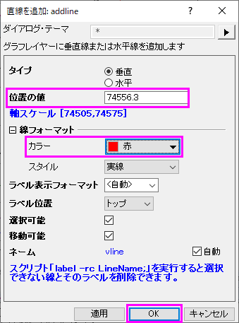
- テキスト付きの直線が追加されます。線オブジェクトのテキストオブジェクトをダブルクリックし、編集します。書式ツールバーにある
 と
と ボタンを使用して上付き、下付き文字の編集を行います。下記のグラフのように入力します。
ボタンを使用して上付き、下付き文字の編集を行います。下記のグラフのように入力します。
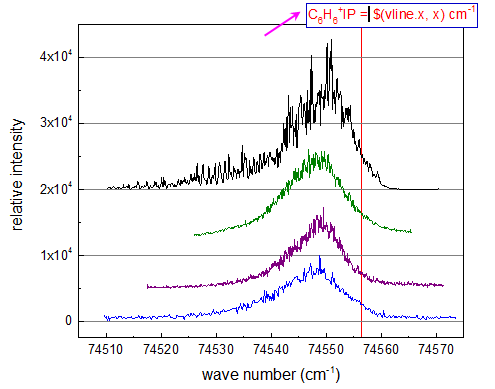
そして、テキストボックス外の領域で一度クリックし、テキスト編集を終了します。テキストをドラッグ&ドロップして位置を適当な位置に変更します。
テキストオブジェクトは線の座標を取得するので、線オブジェクトを水平方向にドラッグして移動すると、ラベルに表示される値も更新されます。
- 折れ線グラフの注釈の文字列と、テキストツールでタイトルを追加します。
 |
テキストラベルの編集方法には次の2通りがあります。
|
最終的にマリーセクションの画像のようなグラフにします。